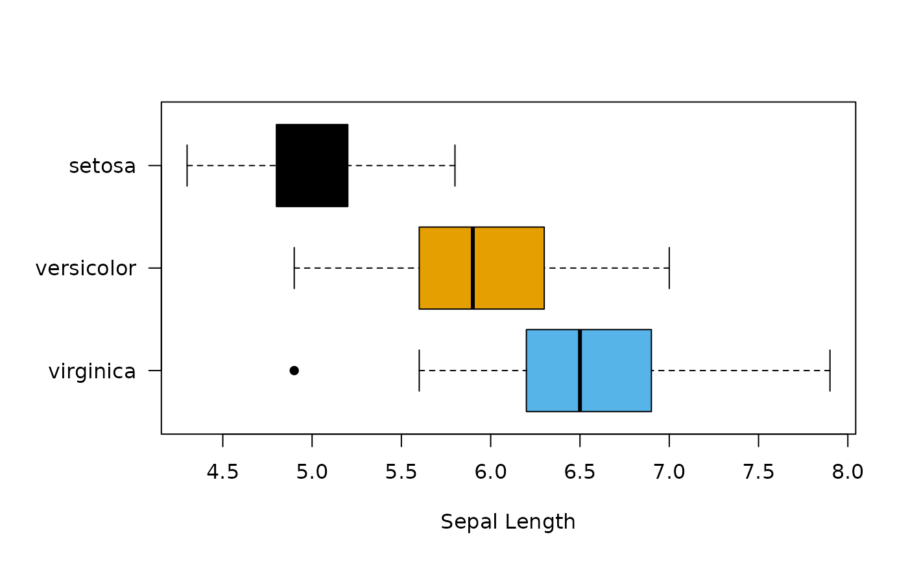
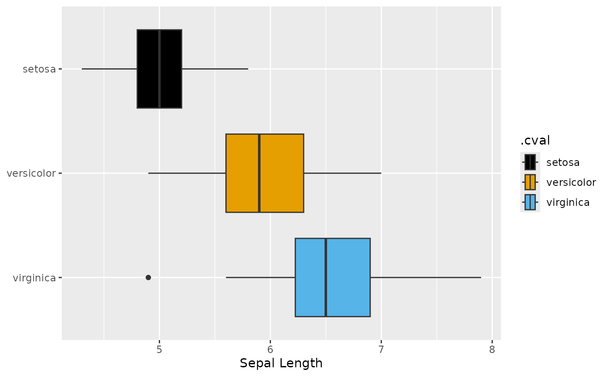

Draw Boxplots
Usage
draw_boxes(
x,
horizontal = TRUE,
...,
main = NULL,
sub = NULL,
xlab = NULL,
ylab = NULL,
theme = NULL,
theme.values = NULL,
legend = NULL,
legend.title = NULL,
engine = getOption("dualplot.engine", "graphics")
)Arguments
- x
a named list of numeric vectors (one per category).
- horizontal
logical; if
TRUE, boxes are drawn horizontally.- ...
additional graphical parameters.
- main, sub, xlab, ylab
optional plot titles and axis labels.
- theme
optional color theme name or
"colortheme"object.- theme.values
optional vector (length
length(x)) mapped to box fills viatheme.- legend
logical or character legend position.
- legend.title
optional title string for the legend.
- engine
graphics backend:
"graphics"or"ggplot2".
Examples
groups <- split(iris$Sepal.Length, iris$Species)
draw_boxes(groups, theme = "Okabe-Ito", xlab = "Sepal Length")

if (requireNamespace("ggplot2", quietly = TRUE)) {
draw_boxes(groups, theme = "Okabe-Ito", xlab = "Sepal Length", engine = "ggplot2")
}
